Córtex Estudos · 4º Semestre · Anato Pato II · Aula 09 (28/09)
Patologias da Próstata
Da noz de 20 gramas à glândula de 100 g que estrangula a uretra — e daí ao câncer que nasce longe dela, na zona periférica. A aula inteira gira em torno de uma régua só: a dupla camada de células do ácino. Enquanto a camada basal estiver lá, estamos no benigno (normal, prostatite, hiperplasia) ou no pré-maligno (PIN). "Se perde a dupla, já é câncer."
1 · Anatomia, função e as zonas de McNeal
- Forma e peso: parece uma noz (≈ 3 cm de altura × 4 cm de comprimento × 2 cm de largura) e pesa cerca de 20 g no adulto jovem. A partir dos ~30 anos cresce progressivamente (o slide cita ~0,4 g/ano a partir dos 31) — pode chegar a 60–100 g, e a professora citou próstatas de até 120 g.
- Localização: abaixo da bexiga, à frente do reto, envolvendo a uretra prostática; órgão retroperitoneal. A relação com o reto é o que torna o toque retal possível; a relação com a uretra é o que faz a hiperplasia dar sintoma urinário.
- Função: produz o líquido prostático, que se junta à secreção da vesícula seminal para formar o sêmen.
- Controle hormonal: dentro da próstata a testosterona é convertida em di-hidrotestosterona (DHT), o hormônio que controla o tamanho da glândula. Prova disso: a castração provoca atrofia da próstata por apoptose difusa — sem andrógeno, as células epiteliais e mesenquimais morrem.
As 4 zonas de McNeal
| Zona | O que nasce ali | Por que importa |
|---|---|---|
| Periférica (posterior) | maioria dos carcinomas | encostada no reto → palpável ao toque retal; longe da uretra → câncer inicial é assintomático |
| De transição (periuretral) | maioria das hiperplasias (HPB) | abraça a uretra → comprime cedo → sintoma urinário precoce |
| Central | só ~10% dos carcinomas | — |
| Estroma fibromuscular anterior | — | ~30% do volume da próstata |
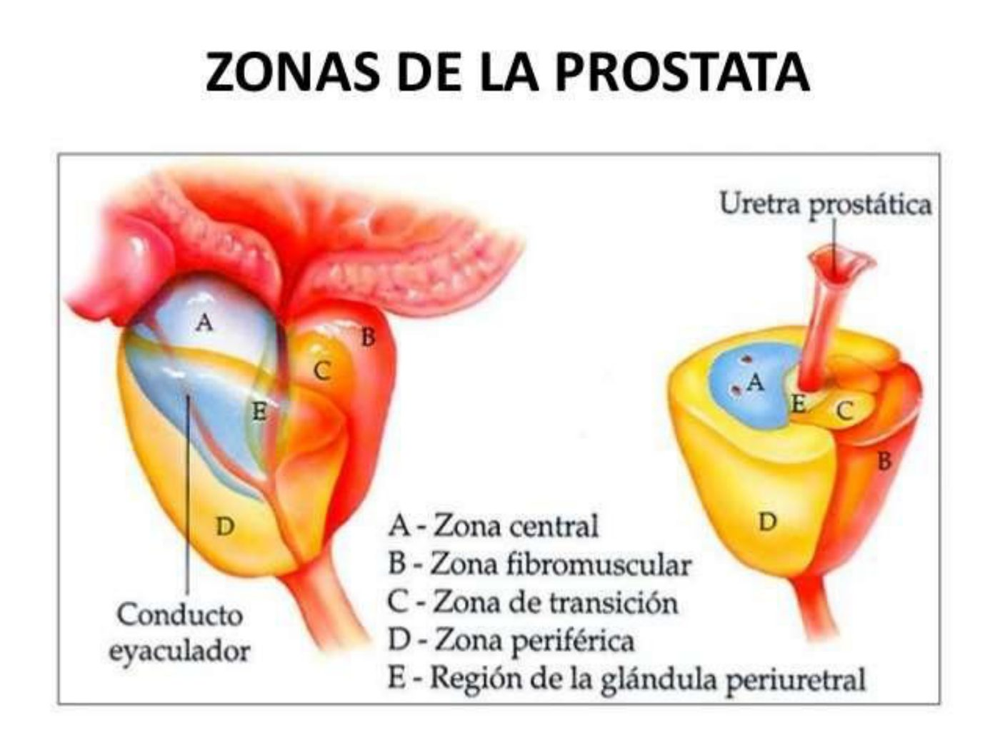
🎯 "É bem importante, pessoal: periférica e transição"
A professora resumiu a anatomia numa troca: zona periférica → câncer (por isso o toque retal); zona de transição → hiperplasia (por isso a HPB dá sintoma antes do câncer). A hiperplasia, colada na uretra, "pode produzir muito mais sintoma que o câncer".
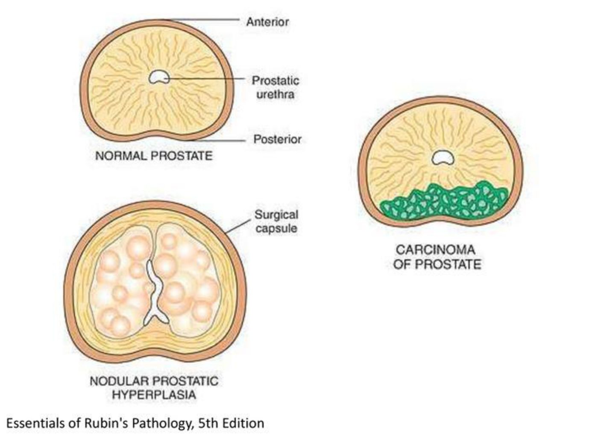
2 · Histologia: o ácino de dupla camada
- A próstata é um conglomerado de 30 a 50 glândulas túbulo-alveolares compostas — o mesmo grupo de classificação do pâncreas. Os ácinos (ou alvéolos, como no Junqueira) drenam por ductos na uretra prostática.
- Cápsula: conjuntivo denso não modelado, com músculo liso, ricamente vascularizada. Dela deriva o estroma — conjuntivo com fibras de músculo liso entremeadas (estroma fibromuscular), que separa, sustenta e nutre os ácinos.
- O ácino tem DUAS camadas de células:
- Luminal — colunar secretora (cilíndrica), voltada para a luz, produz o líquido prostático;
- Basal — cuboide baixa ou achatada (quase pavimentosa), por fora, encostada no estroma.
- É normal ver pequenas dobras papilares do epitélio em direção à luz. Quando as dobras se multiplicam muito, pense em hiperplasia.
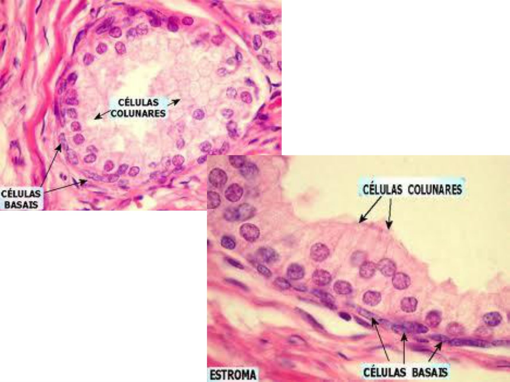
🎯 "Se perde a dupla, já é câncer"
Mesmo o câncer bem diferenciado forma ácinos parecidos com os normais — o que ele não tem é a camada basal. Por isso o patologista "bate o martelo" olhando a dupla camada: tem as duas camadas → benigno (pode haver alguma alteração, mas mínima); perdeu a basal → carcinoma.
Imuno-histoquímica: quando a basal não está clara
- Na lâmina real nem sempre a camada basal é "bonita como na foto". Para tirar a dúvida existem marcadores exclusivos das células basais da próstata: a citoqueratina de alto peso molecular 34βE12 e o p63 (o slide também mostra CK5). Nem a célula colunar nem a estromal os expressam.
- Leitura: o anel marrom contornando todo o ácino = camada basal presente = benignidade. Ácino sem marcação = basal ausente = a favor de carcinoma.
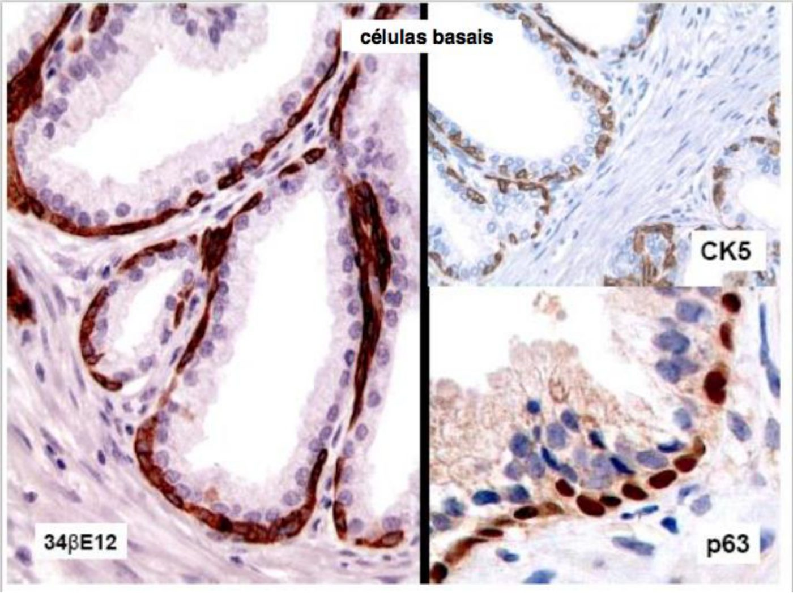
Corpos amiláceos
Concreções de secreção prostática calcificada (glicoproteínas) dentro dos ácinos, em camadas concêntricas. Aumentam com a idade e não significam nada — nem benigno, nem maligno.
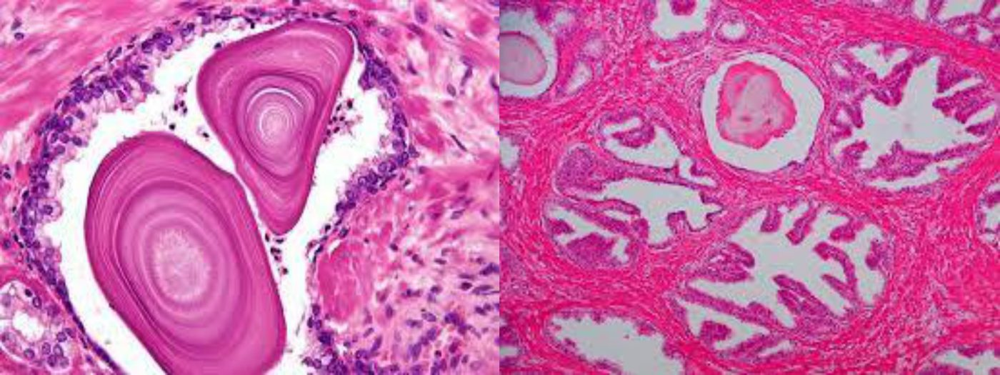
3 · Prostatites bacterianas: aguda × crônica
São quatro prostatites: bacteriana aguda, bacteriana crônica, abacteriana (crônica) e granulomatosa. Podem surgir em qualquer parte da glândula, mas são mais vistas na zona periférica. Nas bacterianas, o que muda é o tempo: aguda = neutrófilos; crônica = linfócitos (e plasmócitos).
Prostatite bacteriana aguda
- Agente: as mesmas bactérias da infecção urinária — na maioria, cepas de E. coli.
- Como a bactéria chega: (1) refluxo intraprostático de urina da uretra posterior ou da bexiga — por exemplo, numa obstrução: a urina não sai, a pressão sobe e ela entra onde puder; (2) via linfo-hematogênica a partir de foco distante; (3) após manipulação da uretra ou da próstata (cistoscopia, cateterismo).
- Clínica: início súbito, febre alta, calafrios, disúria. Ao toque retal, próstata extremamente sensível e amolecida (edemaciada, cheia de infiltrado).
- Diagnóstico: clínica + cultura de urina positiva + leucograma com leucocitose e desvio à esquerda.
- Lâmina (didática): luz dos ácinos repleta de neutrófilos, edema difuso, congestão; pode formar pequenos abscessos e áreas coalescentes de necrose focal.
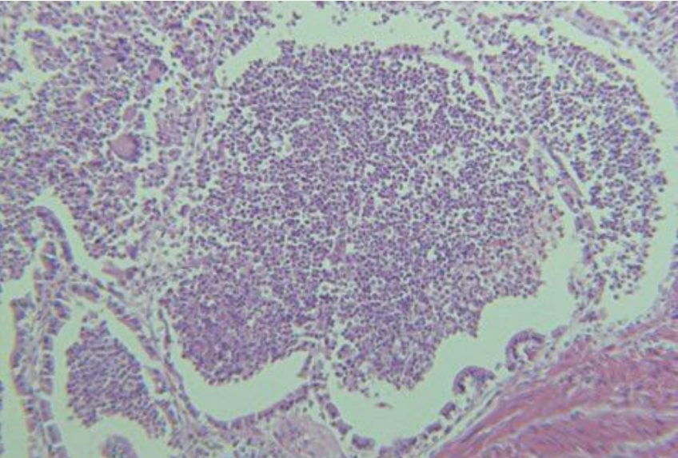
⚠️ Biópsia na prostatite aguda é CONTRAINDICADA
Pode provocar sepse. Na prática, biópsia de prostatite aguda ou crônica raramente é examinada: o diagnóstico é clínico + laboratorial. As lâminas da aula são para a graduação entender o processo, não rotina.
Prostatite bacteriana crônica
- Difícil de diagnosticar e de tratar. Sintomas leves, intermitentes, sem febre: dor perineal (no slide, por pelo menos 3 meses nos últimos 6), dor pélvica crônica, disúria, dor lombar, desconforto suprapúbico. Em geral não há ataque agudo prévio — o início é insidioso.
- A pista da anamnese: história de infecções urinárias de repetição (cistite, uretrite) pelo mesmo organismo — o mesmo da aguda.
- Por que cronifica: "a próstata é uma esponjinha" — a maioria dos antibióticos penetra pouco nela; a bactéria encontra um porto seguro no parênquima e semeia o trato urinário de tempos em tempos.
- Diagnóstico: leucócitos na secreção prostática obtida por expressão (massagem digital pelo reto, com amostras de urina pré e pós-massagem) + cultura bacteriana positiva. Leucograma normal ou discreto, sem desvio — inflamação localizada e de baixa intensidade.
- Lâmina: linfócitos no estroma entre as glândulas (não na luz); pode haver fibrose.
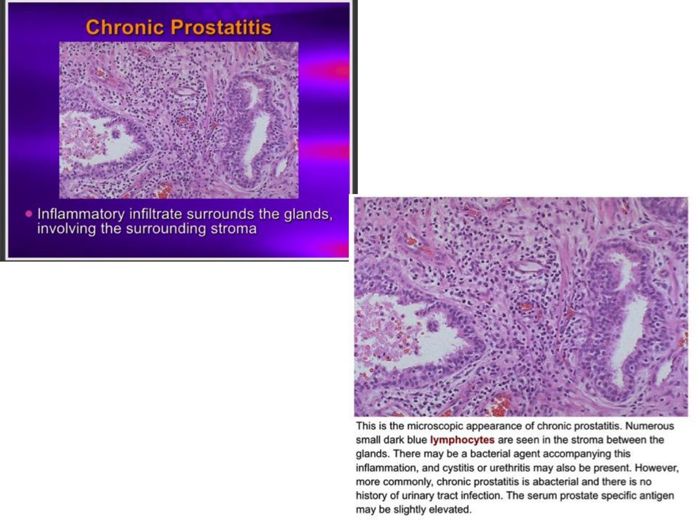
| Característica | Aguda | Crônica |
|---|---|---|
| Início | súbito | insidioso |
| Febre | alta | rara |
| Dor | intensa | leve/moderada, recorrente |
| Leucograma | leucocitose + desvio à esquerda | normal ou discreto |
| Células | neutrófilos (na luz) | linfócitos + plasmócitos (no estroma) |
| Abscesso / fibrose | comum / não | raro / presente |
| Tratamento | antibiótico 2–4 semanas | antibiótico 4–6 semanas (ou mais) |
4 · Prostatite abacteriana e granulomatosa
Prostatite abacteriana (crônica)
- É a forma mais comum de prostatite, de causa desconhecida.
- Clinicamente indistinguível da bacteriana crônica — exceto que não há história de ITU recorrente.
- Diagnóstico: secreção prostática com mais de 10 leucócitos por campo de grande aumento + culturas uniformemente negativas. Por isso a cultura é o exame que separa as três crônicas/agudas.
- Não responde a antibiótico → tratamento sintomático / anti-inflamatório.
Prostatite granulomatosa
Granuloma exige célula epitelioide — a célula gigante (gigantócito) pode estar ou não, mas a epitelioide é obrigatória. Divide-se em:
| Específica | Inespecífica | |
|---|---|---|
| Causa | agente identificável: Mycobacterium (após BCG intravesical ou TB) e, mais raramente, fungos em imunocomprometidos | reação inflamatória às secreções extravasadas após ruptura de ductos/ácinos (trauma); alguns têm ITU recente, mas sem bactéria no tecido |
| Histologia | granulomas indistinguíveis dos da tuberculose (pode haver necrose caseosa na TB) | granulomas relacionados a ductos/ácinos lesados |
| Diagnóstico | biópsia + identificação do agente | biópsia + exclusão de causa infecciosa |
| Tratamento | tratar a causa (antituberculoso/antifúngico) | sintomático, geralmente autolimitada |
🩺 O BCG que vai parar na próstata
No câncer de bexiga superficial, um dos tratamentos é instilar BCG (o bacilo atenuado) na bexiga — de propósito, para o organismo montar uma resposta granulomatosa que "abraça" e isola o tumor. Como bexiga e próstata se comunicam, uma complicação da terapia é a micobactéria chegar à próstata e formar granulomas lá também.
⚠️ Granulomatosa simula câncer
Os granulomas deixam a próstata endurecida e irregular ao toque retal — característica de câncer — e a inflamação pode elevar o PSA. Resultado: muitas vezes pede-se biópsia justamente para afastar adenocarcinoma.
5 · HPB: definição, incidência e patogênese hormonal
- Hiperplasia prostática benigna (HPB) ou hiperplasia nodular: hiperplasia do estroma e das células epiteliais, formando nódulos na região periuretral — quase exclusivamente na zona de transição. Nódulos grandes comprimem e estreitam a uretra → obstrução parcial ou completa.
- Hiperplasia = aumento do NÚMERO de células (não do tamanho). Aqui o aumento vem de dois lados: ↑ proliferação (principalmente estromal) e ↓ morte celular (principalmente epitelial) — acúmulo de células senescentes.
- Incidência: 20% aos 40 anos · 70% aos 60 · 90% acima dos 80. Mas só ~50% de quem tem evidência microscópica tem aumento clinicamente detectável, e só ~50% desenvolvem sintomas.
🎯 HPB NÃO é lesão pré-maligna (≠ PIN)
"Quando a gente fala em hiperplasia prostática benigna, a gente tem certeza que isso não vira câncer." Se o laudo diz hiperplasia, não se assusta o paciente. Já a PIN (neoplasia intraepitelial prostática) é lesão pré-maligna (tópico 13).
Via da testosterona → DHT
- Quem gera a hiperplasia não é a testosterona em si, mas a sua conversão: a DHT, principal andrógeno da próstata, mais potente que a testosterona (maior afinidade pelo receptor androgênico, complexo mais estável).
- A conversão depende da 5α-redutase:
- Tipo 2 — exclusiva da próstata, localizada quase totalmente nas células estromais (fibroblastos e musculares lisas). As epiteliais não a têm (salvo raras basais). Logo, o estroma comanda o crescimento dependente de andrógeno.
- Tipo 1 — na pele e no fígado; a DHT produzida ali chega à próstata por via endócrina. Mas a maior parte da DHT é feita na própria próstata.
- A DHT se liga ao receptor androgênico (AR) nuclear da própria célula estromal (autócrina) e da célula epitelial vizinha (parácrina). A DHT não é mitógeno direto: ela ativa a transcrição de fatores de crescimento e seus receptores, que agem de forma autócrina e parácrina.
Os 4 fatores que a professora mandou decorar
- 1FGF-7 — produzido só pelas células estromais, age na epitelial (parácrino) e diminui a morte das células epiteliais. Provavelmente o fator mais importante.
- 2FGF-1, FGF-2 e TGF-β — produzidos por estroma e epitélio, promovem a proliferação de fibroblastos (aumento do estroma).
Por que piora com a idade — e a via do estrógeno
- Com o envelhecimento a testosterona cai, mas as células passam a ter mais receptores androgênicos → ficam mais sensíveis à DHT. Por isso a próstata de todo homem cresce com a idade.
- Ao mesmo tempo aumenta o estrógeno, pela aromatização periférica no tecido adiposo → predomínio relativo de estrógeno. O estrógeno bloqueia a apoptose das células epiteliais (e pode induzir receptores androgênicos).
- Como o estroma (rico em músculo liso) cresce, aumenta também o tônus muscular da glândula; o aumento fibromuscular costuma ser mais expressivo que o glandular.
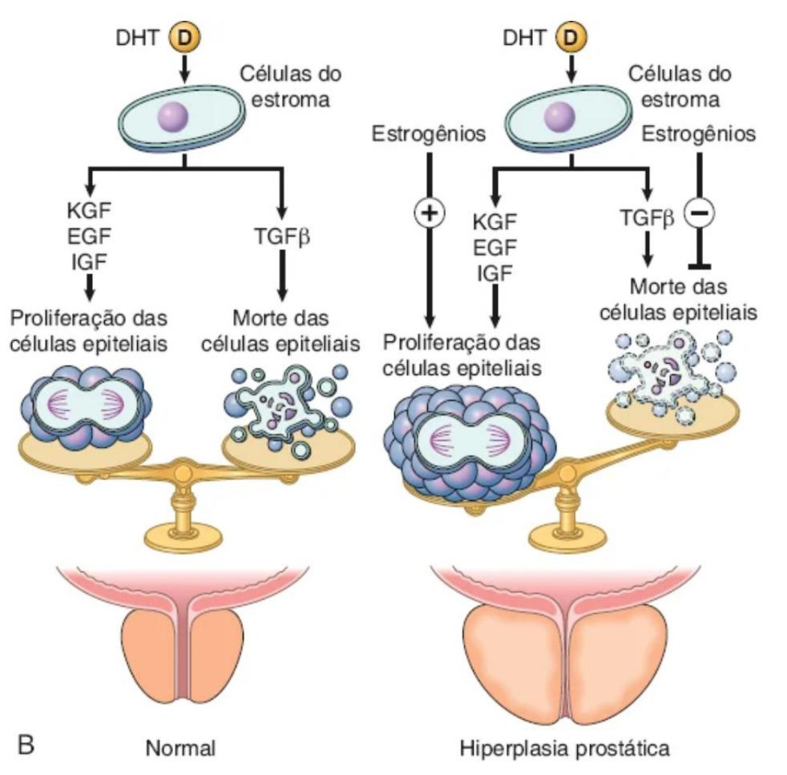
6 · HPB: macro e microscopia
Macroscopia
- 60–100 g (ou mais). Nódulos grandes, relativamente nítidos, periuretrais, não encapsulados (no máximo uma pseudocápsula fibrosa). A uretra prostática fica achatada, "amassadinha".
- O aspecto depende do componente que predomina:
- predomínio glandular → tecido rosa-amarelado, macio, que exsuda líquido leitoso;
- predomínio estromal fibromuscular → tecido cinza-pálido, firme, menos demarcado, sem líquido.
- Nódulos maiores podem ter hemorragia focal, infarto/isquemia e até calcificação e pequenos cálculos em ácinos dilatados.
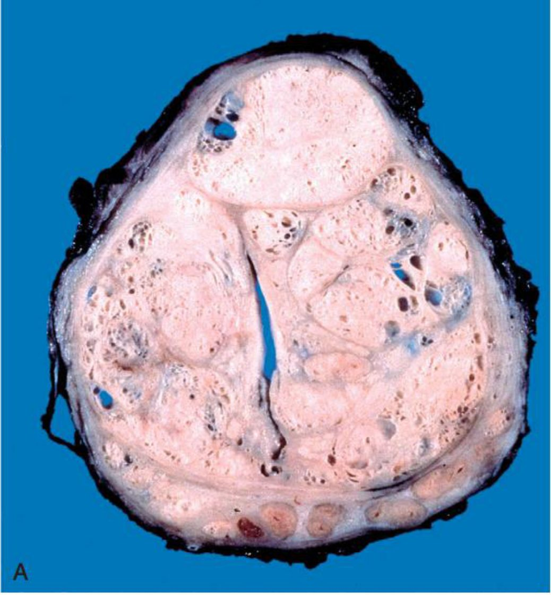
Microscopia
- Nódulos estrômato-glandulares bem delimitados (menos frequentemente só estromais ou só glandulares), com estroma aumentado entre eles.
- Ácinos com dobras/papilas mais pronunciadas que o normal — "de 5 células vou para 10, 15, 20": as células se acumulam e formam papilinhas.
- Células colunares mais altas, de citoplasma claro. E o que garante a benignidade: a dupla camada está preservada.
- Por ser processo crônico, é comum encontrar infiltrado linfocitário no estroma.
- No tricrômico de Masson (cora colágeno), salta aos olhos a proliferação estromal — mais fibroblastos, mais colágeno.
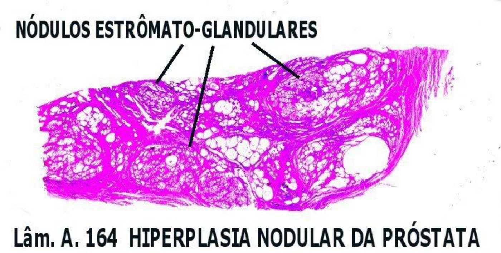
7 · HPB: obstrução estática, dinâmica e complicações
Duas obstruções somadas
- 1Obstrução ESTÁTICA — é o volume: os nódulos da zona de transição (via 5α-redutase/DHT) estreitam a uretra.
- 2Obstrução DINÂMICA — é o tônus: com a hipertrofia/hiperplasia, ocorre neuroplasticidade com aumento de receptores α1-adrenérgicos no trígono, esfíncter e próstata → contração → a urina não sai.
- Lembrete de fisiologia: parassimpático (receptores muscarínicos) contrai o detrusor e relaxa trígono/esfíncter → micção; simpático (β no detrusor, α1 no trígono/esfíncter) relaxa o detrusor e contrai o esfíncter → retenção.
- A bexiga se adapta: força contra a obstrução → hipertrofia e hiperplasia do detrusor (músculo liso aumenta em tamanho e número) → parede espessa com trabeculações (a mucosa vesical normal é lisa). A neuroplasticidade também aumenta receptores muscarínicos (reflexo de micção acentuado: vontade frequente) — mas o α-adrenérgico é o que mais aumenta. Resultado: vontade de urinar sem conseguir esvaziar.
- Tardiamente, como num coração sobrecarregado, o detrusor sofre lesão: cai a contratilidade, a complacência e a capacidade da bexiga; há isquemia vesical e fibrose.
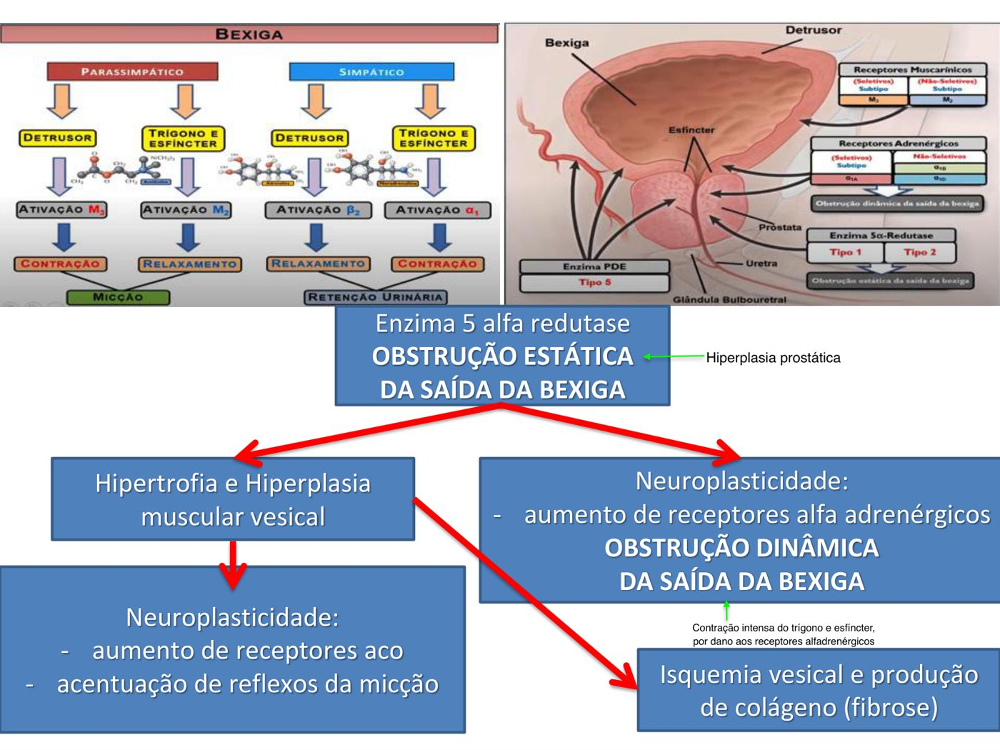
A cascata de complicações
Da uretra ao rim
- 1Bexiga trabeculada e urina residual — o esvaziamento incompleto cria um reservatório de urina parada → cistite (mucosa eritematosa e edemaciada).
- 2Refluxo vesicoureteral — a junção vesicoureteral deveria fechar quando a bexiga contrai; com a pressão intravesical enorme, ela falha e a urina volta.
- 3Hidroureter → hidronefrose — ureter e cálices renais dilatados.
- 4Pielonefrite — urina estagnada no rim é "um sítio maravilhoso para proliferar bactérias".
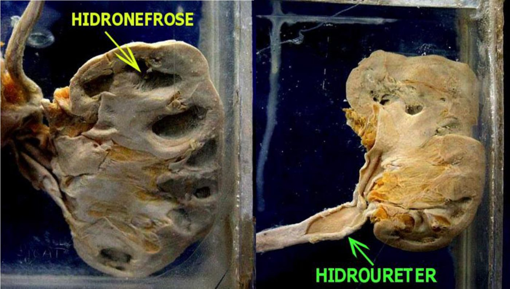
Sintomas (LUTS): aumento da frequência urinária, dificuldade em iniciar e interromper o jato, jato fraco, esvaziamento incompleto, gotejamento por sobrefluxo, disúria — e maior risco de infecção de bexiga e rins.
8 · HPB: clínica e tratamento
- Não há relação diretamente proporcional entre volume da próstata, intensidade dos sintomas e qualidade de vida. Isso foi mostrado cruzando o escore de sintomas (IPSS: 1–7 leve, 8–19 moderado, 20–35 grave) com um questionário de qualidade de vida. Não precisa decorar as tabelas — precisa saber que quem guia o tratamento são os sintomas, a QV e as complicações, não o tamanho.
| Conduta | Perfil do paciente |
|---|---|
| Vigilância | oligossintomático, QV mantida, sem complicações · individualizada, controle a cada 6–24 meses |
| Tratamento clínico | sintomático (moderado/severo), QV alterada, sem complicações |
| Cirurgia | em geral sintomático, QV alterada ou não, COM complicações + desejo do paciente |
Tratamento clínico
- Fitoterápicos (Serenoa repens etc.) — pouca evidência científica; alguns pacientes preferem, em quadros funcionais/dor pélvica leve.
- Alfabloqueadores (doxazosina, tansulosina) — relaxam a musculatura lisa da próstata, do trígono e do esfíncter → melhoram o fluxo (atacam a obstrução dinâmica). Efeito colateral: hipotensão postural.
- Inibidores da 5α-redutase (finasterida, dutasterida) — bloqueiam T → DHT; reduzem o volume em ~20% (atacam a obstrução estática) e reduzem o PSA em ~50% após 6 meses. Efeitos colaterais: redução da libido e disfunção erétil. A finasterida é a mesma usada contra queda de cabelo — a DHT age no folículo piloso.
- Terapia combinada (5αR + alfabloqueador) — benefício na próstata acima de 50 g com LUTS moderado a severo.
🎯 O que a professora disse que pode cobrar
"Posso cobrar para que o alfabloqueador é indicado" — relaxamento do trígono/esfíncter e da musculatura lisa. Não vai cobrar medicação específica, dose ou posologia.
Cirurgia
Indicada em complicações: retenção urinária persistente e refratária, ITU de repetição, dilatação do trato urinário, sangramento urinário persistente, cálculos ou divertículos vesicais — sempre em concordância com o desejo do paciente (há efeitos adversos). O padrão-ouro é a ressecção transuretral da próstata (RTU): o endoscópio entra pela uretra e uma alça vai ressecando o tecido hiperplasiado.
9 · Adenocarcinoma: epidemiologia e patogênese
Adeno = tecido glandular; carcinoma = neoplasia maligna epitelial (adenoma seria a benigna). O adenocarcinoma é a forma mais comum de câncer em homens.
- Epidemiologia: tipicamente acima dos 50 anos; mais frequente em negros; raro em asiáticos — mas a incidência na Ásia vem subindo com a ocidentalização da dieta.
- Dieta: gordura implicada na patogenia; licopeno (tomate), selênio, soja e vitamina D parecem prevenir ou retardar.
Andrógenos e o receptor androgênico
- Crescimento e sobrevida da célula tumoral dependem de andrógeno: DHT + receptor androgênico (AR) → genes pró-crescimento e pró-sobrevida.
- O gene do AR tem repetições do códon CAG (poliglutamina). Repetições mais curtas = receptor mais sensível = maior incidência e mortalidade (afro-americanos); caucasianos têm extensão intermediária; asiáticos, as mais longas — "quanto mais longa, menor a mortalidade".
- Prova da dependência: a castração e os antiandrogênicos induzem regressão. "Seria lindo se fosse sempre assim" — mas a maioria dos tumores fica resistente ao bloqueio androgênico, por: (1) hipersensibilidade a níveis baixos de andrógeno (amplificação do AR); (2) mutações do AR que o ativam por ligantes não androgênicos; (3) vias alternativas que dispensam o AR — sobretudo a PI3K/AKT.
Genética e outras alterações
| Fator | O que a aula disse |
|---|---|
| História familiar | 1 parente de 1º grau → 2× o risco · 2 parentes → 5× · tende a aparecer mais cedo |
| BRCA2 (germinativo) | supressor de tumor; mutado → risco 20× maior |
| Locus 8q24 | aumenta seletivamente o risco em homens afro-americanos; genes da região ligados à imunidade inata → especula-se que a inflamação prepare o cenário (não é "prostatite vira câncer") |
| Genes ETS (rearranjo/fusão) | mutação somática muito comum; superexpressão dependente de andrógeno torna o epitélio invasivo (↑ metaloproteases; perfil de transição epitélio-mesenquimal); fusões detectáveis na urina por PCR → triagem |
| GSTP1 | hipermetilação — a alteração epigenética mais comum; o gene protege contra carcinógenos |
Biomarcadores
- PSA — o mais importante; o único dosado no sangue.
- EZH2 — repressor da transcrição da E-caderina (adesão); níveis altos → perda de adesão → progressão.
- AMACR (α-metilacil-CoA racemase) — presente em ~90% das células malignas; usado em imuno-histoquímica (marrom = célula maligna).
- PCA3.
Os demais (EZH2, AMACR, PCA3) "são legais para a lâmina" — úteis ao patologista, especialmente em tumor pouco diferenciado ou para confirmar a origem de uma metástase.
10 · Clínica, PSA e rastreamento
Curso clínico
- Localizado: assintomático (está na periférica, longe da uretra) — achado por nódulo ao toque retal ou PSA elevado.
- Avançado: sintomas urinários — disúria, hematúria, frequência, dificuldade de iniciar/interromper o jato (só quando já obstrui).
- Metastático: dor óssea, fratura patológica, emagrecimento, síndrome compressiva de coluna, anemia, adenopatias cervicais e inguinais; prognóstico fatal. Metástase óssea osteoblástica em homem é praticamente diagnóstica de câncer de próstata.
- TNM: não precisa decorar — precisa saber que o paciente é estadiado assim: T tamanho do tumor, N linfonodos, M metástase à distância.
Pesquisa da doença
- Toque retal (face posterior) · PSA · ultrassom transretal (baixa sensibilidade/especificidade — serve para guiar a biópsia) · biópsia por agulha (transperineal ou transretal) — o diagnóstico definitivo · cintilografia óssea (alta sensibilidade para metástase óssea).
| Toque retal | Achado |
|---|---|
| HPB | volume aumentado, consistência fibroelástica normal, móvel, sem irregularidade |
| Câncer | pode estar aumentada, contornos irregulares, endurecida, sem dor, mobilidade reduzida ou ausente, nódulos |
| Prostatite aguda | muito dolorosa e amolecida |
| Granulomatosa | endurecida e irregular — simula câncer |
PSA — antígeno prostático específico
- Produzido pelo epitélio, secretado no sêmen para liquefazê-lo. Quando há lesão na parede da célula prostática, ele reflui para o sangue.
- Sobe com câncer, trauma, infecção, inflamação e hiperplasia benigna.
- Referência muda com a idade: 1–2,5 ng/mL (40–49 a) · 0–3,5 (50–59) · 0–4,5 (60–69) · 0–6,5 (acima de 70).
🎯 "PSA é específico para o ÓRGÃO, não para o CÂNCER — não vão errar isso"
Destacado em amarelo no slide e repetido em aula. E não é para "pedir PSA a torto e a direito": é para interpretar.
Quando pedir biópsia (segundo o que foi dado)
- 1PSA acima de 10 ng/mL — indicação formal, independentemente do resto.
- 2PSA entre 4 e 10 — olhar: velocidade ≥ 0,75 ng/mL/ano (ex.: 4 → 4,75 = biópsia) · PSA livre/total × 100 abaixo de 10% = preocupação para câncer (acima de 25% = baixo risco) · densidade (PSA ÷ volume no USTR) acima de 0,15 = desfavorável.
- 3PSA entre 2,5 e 4 — biópsia se risco alto: ascendência negra, história familiar, paciente jovem, velocidade do PSA elevada.
- 4Toque retal suspeito — biópsia independentemente do PSA.
- 5Sempre — expectativa de vida de pelo menos 10 anos (alguns trabalhos: 5).
Rastreamento: população × indivíduo
- Ministério da Saúde e OMS NÃO recomendam rastreamento populacional (PSA + toque em todos os homens sem sintomas). Em estudo citado pelo INCA, de 1.000 homens acompanhados por 13 anos, só 1 teve a morte por câncer de próstata evitada; é mais provável diagnosticar um câncer indolente (crescimento lento, baixa taxa de metástase) e expor o homem aos riscos do tratamento (biópsia com infecção, sangramento; impotência, incontinência).
- Sociedade Brasileira de Urologia: avaliação individualizada a partir dos 50 anos; aos 45 para negros ou com parente de 1º grau com câncer de próstata; aos 40 no risco muito alto (vários familiares com diagnóstico antes dos 65). Decisão compartilhada; após os 75, só com expectativa de vida acima de 10 anos.
11 · Adenocarcinoma: macro, micro e imuno-histoquímica
- Macro: zona periférica, posterior — palpável ao toque. Tecido neoplásico áspero e firme, mais branco/sólido em contraste com o aspecto esponjoso da periférica benigna do lado oposto. Difícil de ver, fácil de palpar.
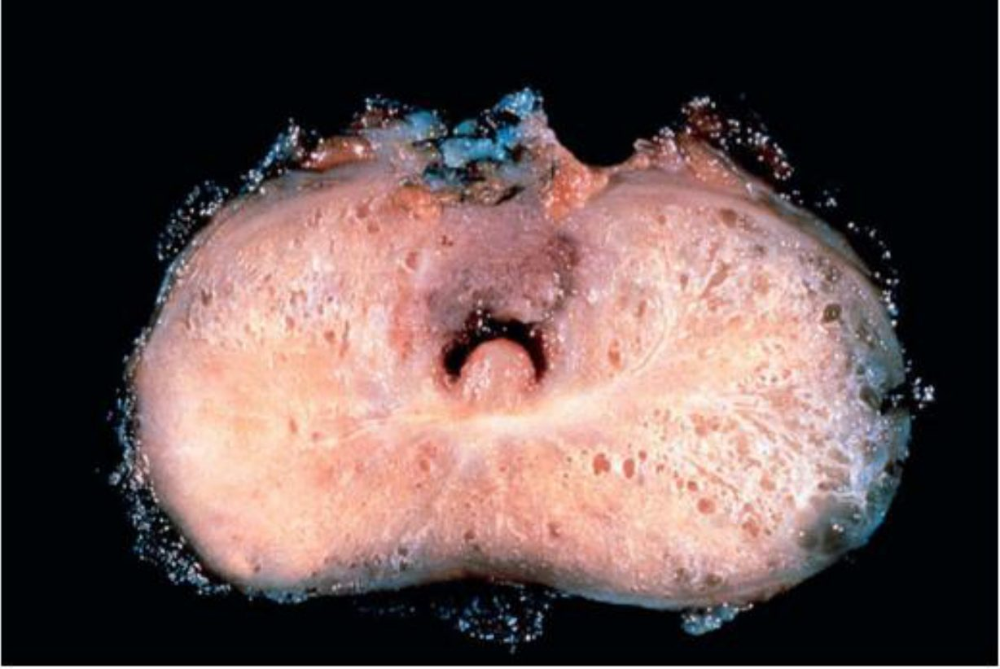
Critérios diagnósticos na lâmina
- 1Desarranjo arquitetural — ácinos de tamanhos distintos, deformados/pontiagudos, com ou sem infiltração do estroma (sem infiltração = melhor prognóstico; infiltrando = pior).
- 2Atipias nucleares — pleomorfismo, nucléolo proeminente (às vezes dois), núcleos vesiculosos.
- 3Ausência de células basais — ácino só com uma camada. O critério-mestre.
Outros critérios: micronódulos colágenos e arranjo glomeruloide (células malignas lembrando glomérulo renal — pouco diferenciado, grau 4).
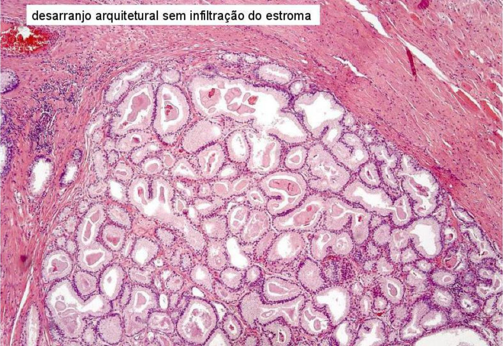
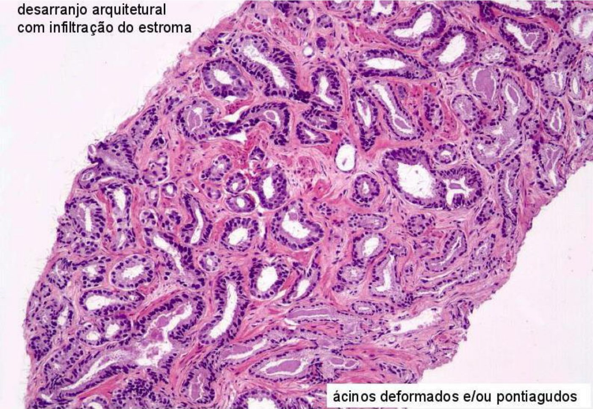
- Padrões de diferenciação: glândulas que lembram próstata = bem diferenciado; cribriforme ("queijo suíço": área sólida com buraquinhos) e sólido ("lençol" de células grudadas) = pouco diferenciados.
- O tumor é heterogêneo: rodando a lâmina, acha-se área sólida, área cribriforme, área com glândulas — "é raro encontrar um tumor homogêneo". Daí nasce o Gleason.
- Invasão perineural: as células malignas têm tropismo por nervos — explica a dor. Também infiltram a musculatura lisa da própria glândula.
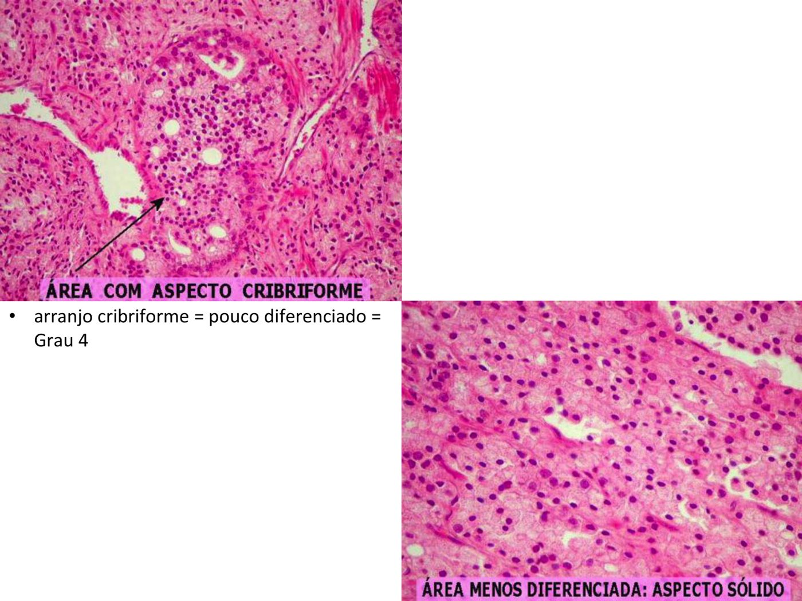
🔬 IHQ: os dois lados da mesma moeda
34βE12 / p63 NEGATIVOS nos ácinos malignos (não há basal para marcar) — enquanto o ácino benigno ao lado fica contornado de marrom. AMACR POSITIVO no citoplasma da célula maligna. Na biópsia por agulha, com pouco tecido e "um montão de glândula benigna e pouca maligna", essa dupla ajuda a separar umas das outras.
12 · Sistema de Gleason
- O patologista dá a cada área do tumor uma pontuação de 1 a 5: 1 = bem diferenciado (parecido com a próstata normal) · 5 = pouco diferenciado (não lembra próstata).
- O escore de Gleason vai de 2 a 10: soma do padrão de maior extensão (primário, vem primeiro) com o segundo padrão (secundário).
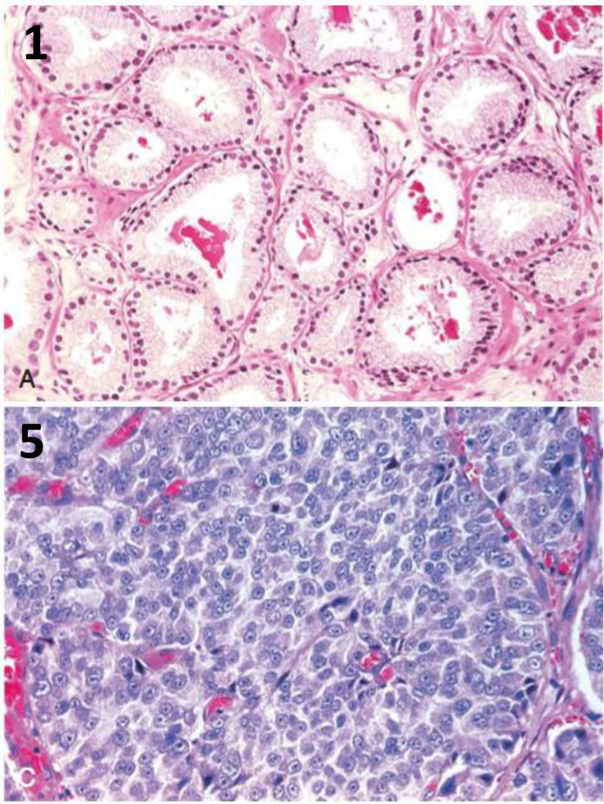
| Fragmento | Áreas encontradas | Gleason | Regra |
|---|---|---|---|
| A | tudo padrão 3 (homogêneo) | 3+3 = 6 | homogêneo → duplica a nota |
| C | maior área 3, menor área 4 | 3+4 = 7 | maior extensão primeiro |
| D | maior área 4, menor área 3 | 4+3 = 7 | mesmo 7, prognóstico pior que 3+4 |
| B | áreas 5, 3 e 4 — a maior é 4 | 4+5 = 9 | mais de 2 padrões: maior extensão + depois o maior número |
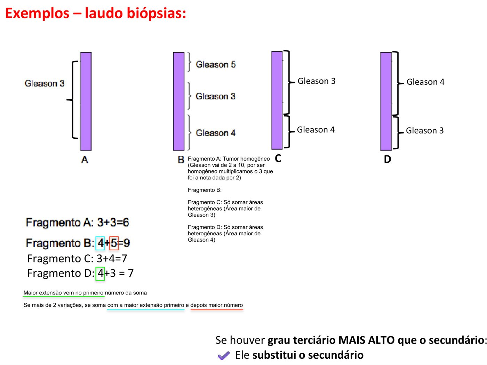
🎯 Por que 4+3 é pior que 3+4 (e 5+4 pior que 4+5)
Os dois somam 7, mas o primeiro número diz o que domina o tumor. No D, a maior parte é padrão 4 (pior); no C, a maior parte é 3. O mesmo raciocínio vale para o 9: 5+4 tem "um 5 grandão", pior que 4+5. E no B o 5 entra mesmo sendo uma área pequena porque "o oncologista precisa saber que tem um pedaço 5".
- Quanto mais baixo o Gleason, melhor o prognóstico: 2–4 → crescimento provavelmente lento; 8–10 → crescimento muito rápido. Na prática, a maioria das biópsias é padrão 3 ou mais (1 e 2 raramente são relatados).
- Grupos de graduação (ISUP): 1 = Gleason ≤6 · 2 = 3+4 · 3 = 4+3 · 4 = 8 · 5 = 9–10. O grupo 5 tem 11,7× mais risco de recorrência e mortalidade que o grupo 1. Grupos se somam a TNM e PSA para estratificar o tratamento.
- Grau e estágio são os melhores indicadores de prognóstico no câncer de próstata. Não precisa decorar tabelas: precisa entender o que o Gleason significa e montá-lo.
13 · Metástases e PIN
Disseminação
- Primeiro linfática (linfonodos regionais), depois hematogênica — principalmente para os ossos do esqueleto axial. Ordem de frequência: coluna lombar → fêmur proximal → pelve → coluna torácica → costelas.
- As metástases ósseas são tipicamente OSTEOBLÁSTICAS: as células malignas invadem o osso e passam a produzir matriz óssea, "imitando osteoblastos". Contraste: o câncer de mama costuma dar metástase osteolítica (destrói osso).
- Disseminação visceral maciça é exceção; a extensão direta alcança vesículas seminais e base da bexiga.
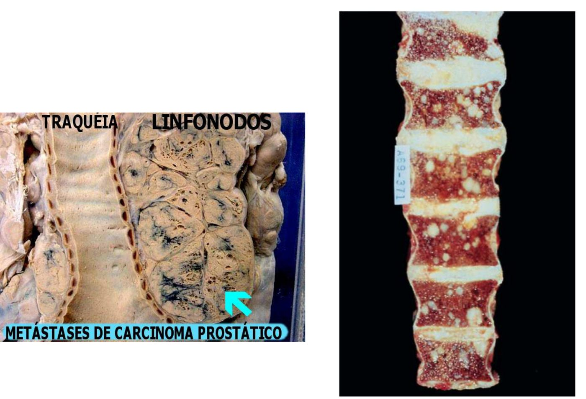
PIN — neoplasia intraepitelial prostática
- Lesão pré-maligna (precursora do adenocarcinoma) — diferente da HPB. Em ~80% das próstatas removidas por carcinoma há PIN de alto grau.
- Por que se presume precursora: (1) predomina na zona periférica; (2) frequência e extensão maiores em próstatas com câncer; (3) alterações moleculares e genéticas em comum com o carcinoma.
- Morfologia: ácinos arquiteturalmente benignos, revestidos por células luminais citologicamente atípicas (núcleos volumosos, nucléolos proeminentes, várias alturas/estratificação) — COM a camada basal presente (a IHQ a contorna em marrom). Graus: baixo × alto.
- Conduta: PIN em si não justifica terapia — só 1/3 desenvolve câncer invasivo em 10 anos. Acompanha-se com PSA (subiu 0,75 de um ano para o outro → investigar). A PIN geralmente não eleva o PSA.
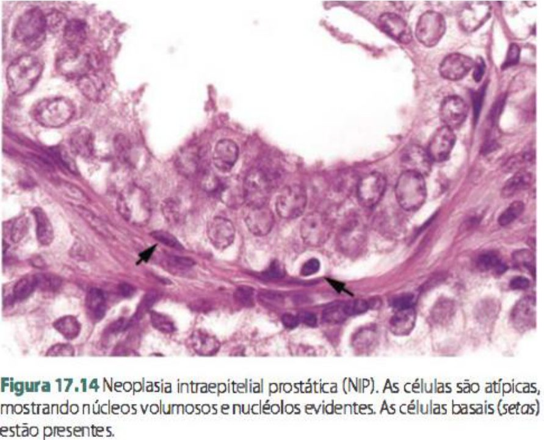
🎯 A régua da aula, de ponta a ponta
Normal / prostatite / HPB: dupla camada + sem atipia. PIN: dupla camada + atipia nas luminais (displasia). Carcinoma: "a partir do momento que eu perdi a camada [basal], eu vou para o carcinoma".
✅ Resumo rápido da aula
- Anatomia: noz de ~20 g (cresce a partir dos ~30 anos; até 100–120 g) · abaixo da bexiga, à frente do reto, envolve a uretra · DHT controla o tamanho; castração = atrofia por apoptose · periférica = câncer (toque) · transição = HPB (sintoma precoce) · central = 10% dos CA · fibromuscular anterior = 30% do volume.
- Histologia: túbulo-alveolar composta (30–50 glândulas) · ácino com colunar secretora + basal achatada · estroma fibromuscular · IHQ de basal: 34βE12 e p63 · corpos amiláceos = secreção calcificada, idade, sem significado.
- Prostatites: aguda (E. coli, febre, próstata dolorosa e mole, urocultura +, desvio à esquerda, neutrófilos na luz, biópsia contraindicada) · crônica bacteriana (sem febre, ITU de repetição, secreção prostática com leucócitos + cultura +, linfócitos no estroma) · abacteriana (a mais comum; cultura negativa; mais de 10 leucócitos/campo; sem ITU recorrente; não responde a antibiótico) · granulomatosa (específica: BCG/TB/fungo em imunocomprometido; inespecífica: secreção extravasada) — endurece e simula câncer.
- HPB: ↑ número de células na zona de transição; não é pré-maligna · 5α-redutase 2 no estroma → DHT → AR autócrino/parácrino → FGF-7 (↓ morte epitelial) + FGF-1, FGF-2, TGF-β (↑ fibroblastos) · idade: ↑ receptores + ↑ estrógeno (aromatase adiposa) que bloqueia apoptose · nódulos estrômato-glandulares, dupla camada preservada.
- Obstrução: estática (volume → inibidor da 5αR) + dinâmica (↑ α1 no trígono/esfíncter → alfabloqueador) · bexiga trabeculada → cistite → refluxo → hidroureter → hidronefrose → pielonefrite · volume não é proporcional a sintoma · cirurgia (RTU) se complicação.
- Adenocarcinoma: periférica, acima de 50, negros · CAG curto = pior · resistência a antiandrogênicos (hipersensibilidade, AR mutado, PI3K/AKT) · família 2×/5× · BRCA2 20× · 8q24 · ETS · GSTP1 · EZH2 · AMACR (90%) · PCA3.
- PSA: específico do órgão, não do câncer · acima de 10 → biópsia · 4–10 → velocidade ≥0,75/ano, livre/total abaixo de 10%, densidade acima de 0,15 · 2,5–4 + risco → biópsia · toque suspeito → biópsia · MS/OMS contra rastreamento populacional; SBU individualiza aos 50 (45 negros/família).
- Lâmina: desarranjo arquitetural ± infiltração + atipia nuclear (nucléolo) + sem basal · cribriforme/sólido/glomeruloide = pouco diferenciado · Gleason = maior extensão + secundário (homogêneo duplica; 3 padrões: maior extensão + maior número) · 4+3 pior que 3+4 · metástase linfática → óssea osteoblástica (lombar primeiro) · PIN = atipia COM basal, 1/3 em 10 anos, segue com PSA.
🧫 Resumão Pré-Prova — Patologias da Próstata
Revisão da véspera · Anato Pato II · Aula 09 · só o que foi enfatizado
- Noz · ~20 g no adulto jovem · cresce a partir dos ~30 anos (até 60–100 g, citado 120 g) · abaixo da bexiga, à frente do reto, envolve a uretra prostática.
- DHT controla o tamanho · castração → atrofia por apoptose difusa.
- Periférica = maioria dos carcinomas (posterior, palpável) · Transição = maioria das HPB (periuretral, sintoma precoce) · central = 10% dos CA · fibromuscular anterior = 30% do volume.
- Túbulo-alveolar composta (grupo do pâncreas), 30–50 glândulas · ácino = dupla camada: colunar secretora (luz) + basal cuboide baixa/achatada · estroma fibromuscular (deriva da cápsula).
- IHQ de basal: 34βE12 (citoqueratina de alto peso) e p63 → marrom contornando o ácino = benigno.
- Corpos amiláceos = secreção calcificada, aumentam com a idade, sem significado.
| Bacteriana aguda | Bacteriana crônica | Abacteriana | Granulomatosa | |
|---|---|---|---|---|
| Causa | E. coli (refluxo, hematogênica, manipulação) | mesmo agente; antibiótico penetra pouco | desconhecida (a mais comum) | específica: BCG/TB, fungo (imunocomprometido) · inespecífica: secreção extravasada |
| Clínica | febre, calafrios, disúria; próstata dolorosa e mole | sem febre; dor perineal/pélvica; ITU de repetição | igual à crônica, mas sem ITU de repetição | próstata endurecida/irregular → simula CA |
| Diagnóstico | urocultura + clínica + leucocitose c/ desvio | secreção prostática c/ leucócitos + cultura + | mais de 10 leucócitos/campo + cultura − | biópsia |
| Lâmina | neutrófilos na luz, abscesso, necrose, edema | linfócitos/plasmócitos no estroma, fibrose | — | granuloma (célula epitelioide obrigatória) |
| Tratamento | ATB 2–4 sem | ATB 4–6 sem ou mais | sintomático (ATB não resolve) | tratar causa · inespecífica autolimitada |
- Biópsia na aguda = CONTRAINDICADA (sepse). Diagnóstico das prostatites é clínico-laboratorial.
- ↑ número de células (estroma + epitélio) na zona de transição = ↑ proliferação + ↓ morte · NÃO é pré-maligna (≠ PIN).
- 20% aos 40 · 70% aos 60 · 90% aos 80 · só 50% com aumento clínico; só 50% com sintoma.
- 5α-redutase tipo 2 = exclusiva da próstata, nas células estromais · tipo 1 = pele e fígado (DHT endócrina).
- DHT → AR do estroma (autócrino) e do epitélio (parácrino) → fatores de crescimento (DHT não é mitógeno direto).
- FGF-7: só estroma → epitélio → ↓ morte epitelial · FGF-1, FGF-2, TGF-β: ↑ proliferação de fibroblastos.
- Idade: ↓ testosterona, porém ↑ receptores (mais sensível à DHT) + ↑ estrógeno (aromatase no adiposo) que bloqueia apoptose epitelial.
- Macro: nódulos periuretrais não encapsulados; glandular = rosa-amarelado, macio, líquido leitoso · estromal = cinza-pálido, firme, seco · infarto/calcificação nos grandes.
- Micro: nódulos estrômato-glandulares · dobras papilares · dupla camada mantida · infiltrado linfocitário comum · Masson cora o colágeno.
- Estática = volume (nódulos) · Dinâmica = ↑ receptores α1-adrenérgicos no trígono/esfíncter/próstata (neuroplasticidade) → contração.
- Bexiga: hipertrofia + hiperplasia do detrusor → trabeculação → urina residual → cistite → refluxo vesicoureteral → hidroureter → hidronefrose → pielonefrite. Tardio: lesão do detrusor, ↓ contratilidade/complacência.
- LUTS: frequência ↑, dificuldade de iniciar/interromper, jato fraco, gotejamento por sobrefluxo, disúria.
- Volume ≠ sintoma ≠ QV (IPSS) → tratar pelo quadro: vigilância (oligossintomático) · clínico (sintomático sem complicação) · cirurgia (complicação + desejo do paciente).
- Alfabloqueador: relaxa trígono/esfíncter/próstata (dinâmica) · hipotensão postural. Inibidor da 5αR (finasterida): ↓ volume ~20% (estática), ↓ PSA ~50% em 6 meses · libido/DE. Combinada: acima de 50 g + LUTS moderado/severo. RTU = padrão-ouro cirúrgico.
- Acima de 50 · negros · raro em asiáticos (↑ com dieta ocidental) · gordura ↑ risco · licopeno, selênio, soja, vitamina D protegem.
- AR com CAG curto = mais sensível = ↑ incidência/mortalidade (afro-americanos) · longo = asiáticos.
- Castração/antiandrogênico → regressão, mas a maioria vira resistente: hipersensibilidade (amplificação do AR) · AR mutado ativado por não-andrógeno · via PI3K/AKT independente do AR.
- Família: 1 parente 1º grau = 2×, 2 parentes = 5×, mais cedo · BRCA2 = 20× · 8q24 (afro-americanos; imunidade inata → inflamação "prepara o cenário") · ETS (fusão, metaloproteases, invasão; PCR na urina) · GSTP1 hipermetilado (epigenética).
- Biomarcadores: PSA (sangue) · EZH2 (reprime E-caderina) · AMACR (90% das células malignas, IHQ) · PCA3.
- Localizado = assintomático · avançado = LUTS, hematúria · metastático = dor óssea, fratura, compressão medular, emagrecimento, anemia, adenopatia.
- Toque: CA = duro, irregular, indolor, pouco móvel · HPB = aumentada, fibroelástica, móvel.
- PSA = específico do ÓRGÃO, não do câncer (sobe em CA, trauma, infecção, inflamação, HPB) · referência sobe com a idade.
- Biópsia: PSA acima de 10 · 4–10 com velocidade ≥0,75/ano, livre/total abaixo de 10%, densidade acima de 0,15 · 2,5–4 + risco (negro, família, jovem) · toque suspeito independe do PSA · expectativa de vida ≥10 anos.
- USTR = guia de biópsia · cintilografia = metástase óssea · TNM: saber que existe.
- MS/OMS: não ao rastreamento populacional (1 morte evitada/1.000 em 13 anos; sobrediagnóstico de indolentes) · SBU: individualizado aos 50; 45 negros/parente 1º grau; 40 risco muito alto; após 75 só com expectativa acima de 10 anos.
- 3 critérios: desarranjo arquitetural (± infiltração do estroma) · atipia nuclear (nucléolo proeminente) · ausência de células basais. Outros: micronódulos colágenos, arranjo glomeruloide.
- IHQ: 34βE12/p63 negativos + AMACR positivo. Invasão perineural → dor.
- Cribriforme ("queijo suíço"), glomeruloide = grau 4 · sólido ("lençol") = menos diferenciado ainda.
- Pontuação 1 (bem dif.) a 5 (pouco dif.) · escore 2–10 = maior extensão PRIMEIRO + secundário · homogêneo: duplica (3+3=6) · 3 padrões: maior extensão + maior número (B: 4+5=9) · terciário mais alto substitui o secundário.
- 4+3 pior que 3+4 · 5+4 pior que 4+5 · ISUP: grupo 1 (≤6) · 2 (3+4) · 3 (4+3) · 4 (8) · 5 (9–10; 11,7× risco).
- Grau + estágio = melhores indicadores prognósticos.
- Linfática primeiro → hematogênica para osso axial: lombar → fêmur proximal → pelve → torácica → costelas.
- Osteoblástica (produz osso) — em homem, praticamente diagnóstico · mama = osteolítica · visceral maciça = exceção · direta: vesículas seminais, base da bexiga.
- PIN = ácinos arquiteturalmente benignos + luminais atípicas (nucléolo) + basal PRESENTE · pré-maligna · 80% dos CA têm PIN de alto grau ao lado.
- PIN não se trata: 1/3 → câncer invasivo em 10 anos → seguimento com PSA (geralmente não eleva o PSA).
- HPB (zona de transição, não pré-maligna, basal presente, sem atipia) ≠ PIN (periférica, pré-maligna, basal presente, COM atipia) ≠ carcinoma (periférica, basal AUSENTE).
- Prostatite aguda: neutrófilos na LUZ · crônica: linfócitos no ESTROMA.
- Bacteriana crônica (ITU de repetição, cultura +) ≠ abacteriana (sem ITU de repetição, cultura −, não responde a ATB).
- 5α-redutase 2 (próstata, estroma) ≠ tipo 1 (pele e fígado).
- FGF-7 (↓ morte epitelial) ≠ FGF-1/2 + TGF-β (↑ fibroblastos).
- Alfabloqueador → obstrução dinâmica ≠ inibidor da 5αR → obstrução estática (e derruba o PSA pela metade).
- CAG curto = pior (negros) ≠ CAG longo = melhor (asiáticos).
- 3+4 = 7 ≠ 4+3 = 7 (o segundo é pior).
- Osteoblástica (próstata) ≠ osteolítica (mama).
- 34βE12/p63 marcam basal (benigno) ≠ AMACR marca célula maligna.
Banco de Questões — Patologias da Próstata
Anato Pato II · Aula 09 · estilo ENADE/residência.